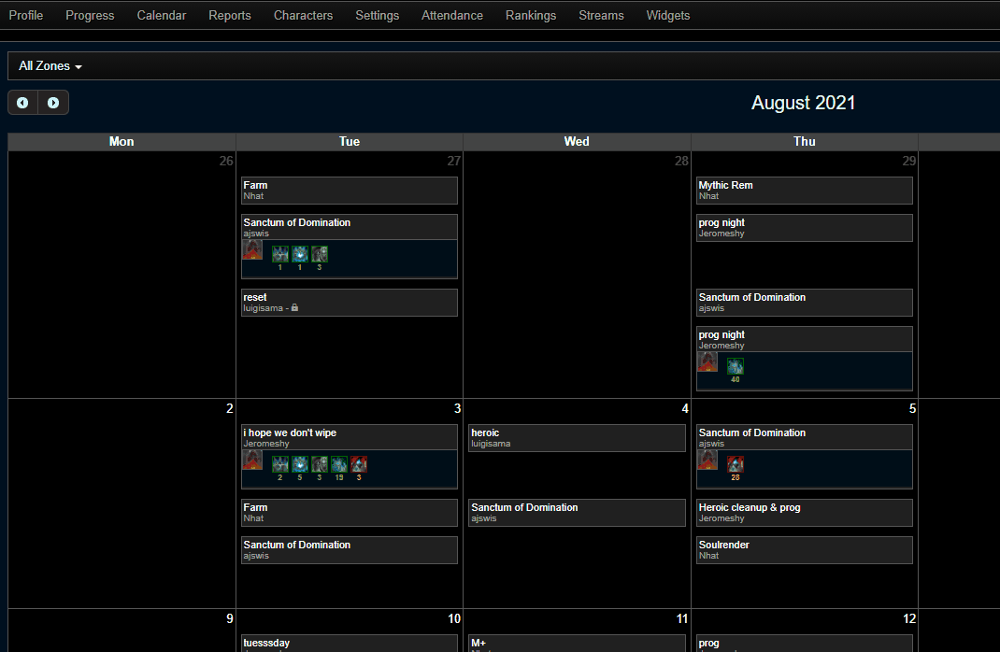

{% extends 'layout.html' %}
{% block body %}
Background
 World of warcraft is an online video game with millions of active unique users every month.
Within the game, players form into groups and attempt to defeat encounters by ‘pulling’ the encounter multiple times slowly progressing until they defeat it.
Defeating one of these encounters can be very exciting and rewarding to players as shown by the image.
Understanding how close a group is to defeating a boss is very important to players as they may spend hours or even days progressing on a single encounter.
World of warcraft is an online video game with millions of active unique users every month.
Within the game, players form into groups and attempt to defeat encounters by ‘pulling’ the encounter multiple times slowly progressing until they defeat it.
Defeating one of these encounters can be very exciting and rewarding to players as shown by the image.
Understanding how close a group is to defeating a boss is very important to players as they may spend hours or even days progressing on a single encounter.
Below are some helpful terms:
- Encounter: The boss fight that players seek to defeat.
- Pull: A single attempt at an encounter/boss.
- Progression: Repeatedly pulling an encounter.
- Wipe: A failed pull. Recorded as % through the encounter.
The Problem

The current method (warcraftlogs) of analyzing ones progress shows very detailed information about specific encounters, but not much information about progress over time.
Current tooling does not provide meaningful insights to how groups progress over the span of days.
This image shows the current system, which breaks encounters down by day, making it difficult to know how groups progress over time.
The Solution
This interactive website will allow players to have a much better understanding of their groups progression over time and gain insight into how their group is doing.
Players will be enabled to do a few things:
- Gain a better understanding of their progression.
- The ability to compare their own group to friends or other groups more easily.
- Use a machine learning method to predict the chances of success on subsequent encounters.
This interactive tool will has two primary pages. The first is 'single guild' which shows players
how a specific group is progressing on a specific encounter. Along with this I developed a machine learning model to predict chance
of success which is shown as well.
The second page is 'tier stats' which shows aggregated statistics about each encounter. This will
allow players to compare their group to other groups who have defeated the boss in important metrics. We also show
average group composition for each boss as this may better inform groups about helpful composition changes they can make.
{% endblock %}